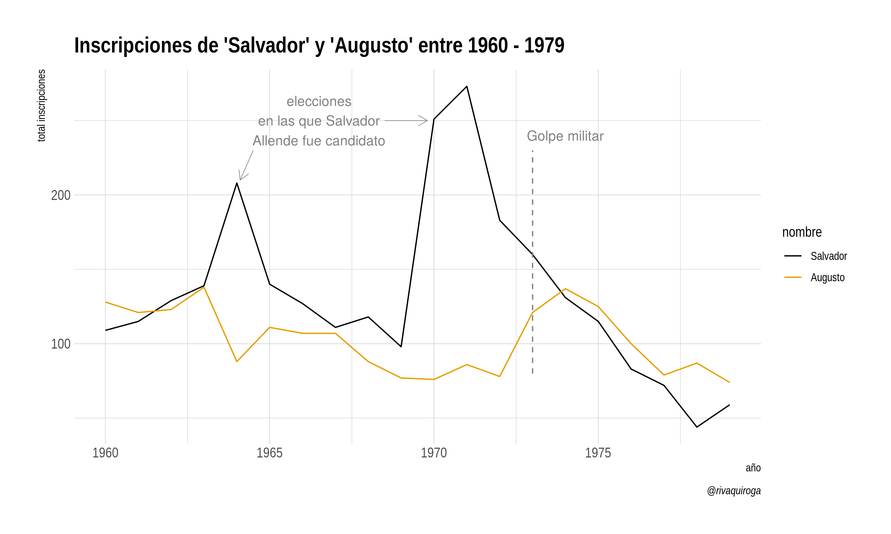
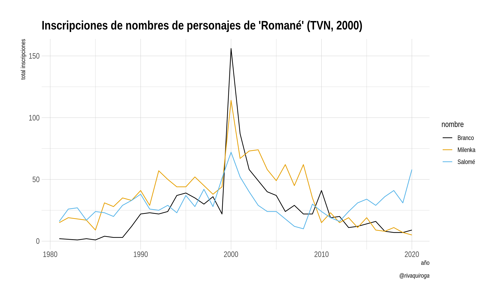

Datos de nombres de guaguas (bebés) registrados en Chile entre 1920 y 2019, según el Servicio de Registro Civil e Identificación. Incluye todos los nombres con al menos 15 ocurrencias. Este dataset permite explorar tendencias en los nombres registrados durante el último siglo y puede utilizarse como fuente de datos de práctica para enseñar/aprender
R.
Instalación
El paquete guaguas puede instalarse directamente desde CRAN:
install.packages("guaguas")La versión en desarrollo puede instalarse desde Github:
# install.packages("devtools")
devtools::install_github("rivaquiroga/guaguas")Datos
El dataframe guaguas contiene cuatro variables y un total de 84565 observaciones:
| variable | descripción |
|---|---|
anio |
año de inscripción |
sexo |
sexo registral |
n |
número de ocurrencias del nombre |
proporcion |
proporción del nombre respecto del total de inscripciones del año |
Ejemplos
A continuación se muestran algunos ejemplos de exploración de estos datos.
El contexto político en los años sesenta y setenta
Los dos momentos en que aumentan las inscripciones con el nombre Salvador en los años sesenta y setenta coinciden con elecciones presidenciales en las que se presentó Salvador Allende como candidato (1964, 1970). El año siguiente de su elección como presidente (1971) es el año con mayor cantidad de inscripciones en esas décadas. Luego del Golpe Militar los registros comienzan a bajar y encuentran su punto más bajo en 1978. El nombre Augusto, por su parte, sube en los registros en 1973 y 1974, pero luego vuelve a bajar.
library(guaguas)
library(dplyr)
library(stringr)
library(ggplot2)
library(forcats)
library(hrbrthemes)
library(ggthemes)
guaguas %>%
filter(nombre %in% c("Salvador", "Augusto"), anio >= 1960 & anio <= 1979) %>%
ggplot(aes(anio, n, color = fct_reorder2(nombre, n, anio))) +
geom_line() +
scale_color_colorblind() +
labs(x = "año", y = "total inscripciones", color = "nombre",
title = "Inscripciones de 'Salvador' y 'Augusto' entre 1960 - 1979") +
theme_ipsum()
El efecto “Romané” en el año 2000
Según IMDB, Romané ha sido una de las teleseries más vistas en Chile. Emitida el año 2000, el nombre de su protagonista reaparece en la lista de inscritas con más de 15 ocurrencias ese año.
guaguas %>%
filter(str_detect(nombre, "(Y|J)ovanka"))
#> # A tibble: 107 x 5
#> anio nombre sexo n proporcion
#> <dbl> <chr> <chr> <dbl> <dbl>
#> 1 1937 Jovanka F 1 0.0000103
#> 2 1958 Jovanka F 1 0.00000397
#> 3 1962 Jovanka F 5 0.0000177
#> 4 1962 Yovanka F 3 0.0000106
#> 5 1963 Jovanka F 17 0.0000595
#> 6 1963 Yovanka F 5 0.0000175
#> 7 1964 Yovanka F 9 0.0000310
#> 8 1964 Jovanka F 7 0.0000241
#> 9 1965 Yovanka F 5 0.0000157
#> 10 1965 Jovanka F 4 0.0000125
#> # … with 97 more rowsTambién aumentaron las inscripciones de nombres de otros personajes de la teleserie:
guaguas %>%
filter(nombre %in% c("Milenka", "Branco", "Salomé"), anio > 1980) %>%
ggplot(aes(anio, n, color = nombre)) +
geom_line() +
scale_color_colorblind() +
labs(x = "año", y = "total inscripciones",
title = "Inscripciones de nombres de personajes de 'Romané'") +
theme_ipsum()
Ídolos musicales
Alguno de los nombres de integrantes de los Backstreet Boys aumentaron hacia fines de la década de los noventa. Como suele ocurrir con nombres en inglés, es posible encontrar variaciones en la forma de escribirlos: Brian, Bryan, Brayan.
guaguas %>%
filter(nombre %in% c("Brian", "Kevin", "Bryan", "Brayan")) %>%
ggplot(aes(anio, n, color = fct_reorder2(nombre, anio, n))) +
geom_line() +
scale_color_colorblind() +
labs(x = "año", y = "total inscripciones", color = "nombre",
title = "El efecto 'Backstreet Boys'") +
theme_ipsum()

Un cartel visto durante la presentación de los Backstreet Boys en el Festival de Viña del Mar 2019. Fuente: FMTiempo
Fuente de los datos
Los datos fueron obtenidos a través del Portal de Transparencia del Sistema de Registro Civil e Identificación de Chile.